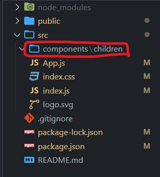
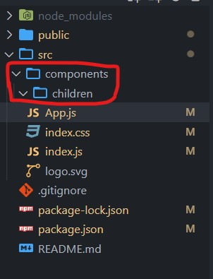
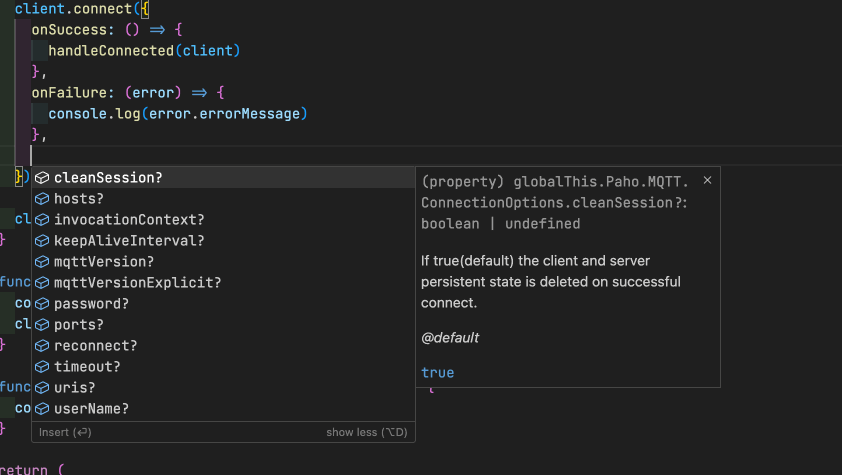
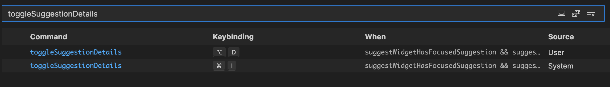
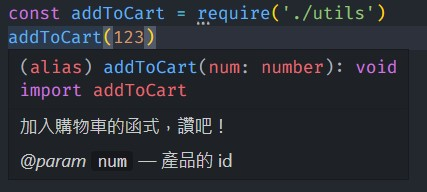

一樣是快捷鍵系列。
Windows
Ctrl + G跳到某一個行數Ctrl + ECtrl + P切換到某個檔案的分頁Ctrl + E + @[變數名稱 / Tag / 內容]切換到某個分頁的某個段落Ctrl + L選取整行內容Ctrl + XShift + Delete刪除整行內容Shift + 方向鍵選取文字Ctrl + 方向鍵單字間跳躍（若要選取的話就加上 Shift）Home鍵跳到句子頭端End鍵跳到句子尾端Ctrl + D選取同名字串Ctrl + Shift + L選取所有同名字串Alt + 方向鍵移動程式碼區塊（可搭配選取內容使用）Alt + 左右方向鍵切換分頁Alt + Shift + 上或下複製程式碼區塊（可搭配選取內容使用）Alt + Shift + R打開資料夾總管Alt + Z自動換行開關（關掉後就不會隨著寬度換行）Ctrl + H搜尋內容 + 取代內容Ctrl + Shift + E切換到檔案面板（側邊欄）Ctrl + Shift + F切換到搜尋面板（側邊欄）Ctrl + N新增檔案Ctrl + K，M選擇檔案的程式語言Ctrl + Shift + O搜尋變數、函式F2修改變數或函式的名稱（不會改到字串）（記得先選取）F12查看某段函式的內容Ctrl + ~Ctrl + J打開或關閉終端機Ctrl + /註解Alt + Shift + A多行註解Ctrl + B打開或關閉側邊攔Shift + Alt + F對內容排版Ctrl + Shift + M查看有 Bug 的分頁Ctrl + \切割視窗Ctrl + ，Ctrl + 。快速標點符號Ctrl + K + L摺疊或展開一個區塊的內容Ctrl + K，W關閉所有分頁Ctrl + K + U關閉所有「已儲存」的分頁Ctrl + Shift + T復原分頁（只回復最後一個關掉的分頁）Ctrl + M把 tab 鍵變成 focus 功能（就是 tab 的預設功能）Ctrl + K + S存檔所有分頁
Mac
Command + Option + up/down多個游標Option + up/down移動程式碼Command + P切換分頁Command/Fn + left/rightHome 鍵和 End 鍵的功能Command + top/bottom跳到檔案的起始位置/終點位置（可搭配 shift 選取）Command + Shift + L選取所有相同的文字Command + L選取整行Command + Shift + left/right等於 Ctrl + L 的效果Option + esc或command + i可以自動顯示相關的 value 或 propsCommand + K + V打開 markdown preview 視窗Option + Command + S存擋所有分頁Shift + Command + .打開 breadcrumb，並且用←和→來移動位置Option + Command + click把 definition 分割到新分頁Command + Shift + O搜尋函式 or 變數的 popupShift + F12打開某個變數或函式的所有 reference popupF12跳到 reference 或 definition 的位置F8跳到 Linter 的錯誤位置Command + Shift + M打開 Linter 錯誤列表Ctrl + g跳到指定行數Command + jtoggle panel 收合（terminal）Command + \分割視窗（垂直）Command + 1 or 2 or 3...切換到不同的分割視窗Command + K, Command + \分割視窗（水平）Command + Option + ← / →切換 Tab 頁面（也可以把游標切換到分割視窗）Command + Option + [ / ]收起 / 展開程式碼區塊Command + Shift + \跳到起始 bracket 或結尾 bracket（跟 vim 的%一樣功能）Command + Shift + E把游標移到 Side bar 或 EditorCommand + Shift + F打開搜尋側邊欄Space打開在 Sidebar 中選取的檔案Option / Control + Enter以分割視窗開啟分頁Command K + Command I彈出 Symbol 的型別內容（滑鼠 hover 會彈出來的那個）Option + F5跳到下一個更新的位置（Git）Command + K + I觸發 hover 效果Command + .觸發 code action 選項（Quick fix）
這邊的詳細資訊可以參考 VS-Code 的 官方文件 介紹。
Emmet 的設定
如果想在 JS 的 template string 中使用 Emmet，可以加上這段設定：
1 | // 要包含的語言（預設應該是只有 HTML吧） |
用 CLI 打開 VS-Code 的方式
首先先用 VS-Code 添加環境變數 Command + Shift + P 搜尋 shell，然後 Enter 看到 OK 就好了。
打開整個資料夾：
1 | code . |
打開指定檔案：
1 | code file.js |
只打開 VS-Code：
1 | code -- |
更改左側資料夾的顯示方式
原本是長這樣：

但你可能會希望是這樣：

這時候只要新增一項設定就好：
1 | // 預設是 true |
搞定！
顯示提示內容
在使用 trigger suggestion 的時候你可能會想看他的 detail，像這樣：

不過因為預設的快捷鍵跟 Mac 有衝突，所以建議能把 toggleSuggestionDetails 調整一下：

幫 function 加上說明
只要輸入 /** 就會自動產生像這樣的 snippe
1 | /** |
可以加入說明文字，而 {Number} 的部分代表參數 num 的資料型態。
接著在使用這個 function 的地方就會出現對應提示：

我的 VS-Code 設定檔
1 | { |
有修改的快捷鍵
Go forward：Command + ]Go back：Command + [Indent line移除Outdent line移除
推薦裝的套件
- Material Icon Theme 美美的 Icon
- One Dark Pro 配色主題一
- Tokyo Night 配色主題二
- Dracula Official 配色主題三
- Winter is Coming 配色主題四
- expand-region 選取工具
- indent-rainbow 縮排醒目色彩
- Code Spell Checker 錯字檢查
- Hex 轉 RGBA 色彩轉換
- ESLint 就是檢查 JS 的 Linter
- Power Mode 炫泡的 typing 效果
- :emojisense: 快速插入 emoji
- GitLens 團隊合作時很好用
- RapidAPI Client 不想用 PostMan 的另一種選擇
- Tailwind CSS IntelliSense 寫 Tailwind 的好幫手！
- env-cmd-file-syntax 支援 env 檔案
- ES7+ React/Redux/React-Native snippets React Snippets
- Live Server Live Server 不解釋
- MDX MDX 語法
- TypeScript Vue Plugin (Volar) 給 Volar 用的 TypeScript 套件
- Vue Language Features (Volar) Vue 語法支援
- Clipboard Manager 複製貼上好幫手
- change-case 把單字轉換成各種 case
- CodeSnap 加了美圖秀秀的程式碼（拍立得）
- Center Editor Window 視角置中（有用過 vim 的 zz 都懂）
- jumpy 快速把游標跳到想要的位置。
- Inline Parameters for VSCode 顯示 parameter 的名稱（類似 IntelliJ）
- Formatting Toggle 一鍵切換 Formatter
- pretty-ts-errors 給人類看的 TS 錯誤訊息
- markdown-all-in-one 有在用 markdown 的人不要錯過！
- TODO-Highlight 就是 TODO 貼紙
- SCSS IntelliSense 加強 SCSS 的語法
- css-peek 讓 CSS 也能有 Symbol 的功能
- Vue Official 一鍵搞定 Vue 開發環境